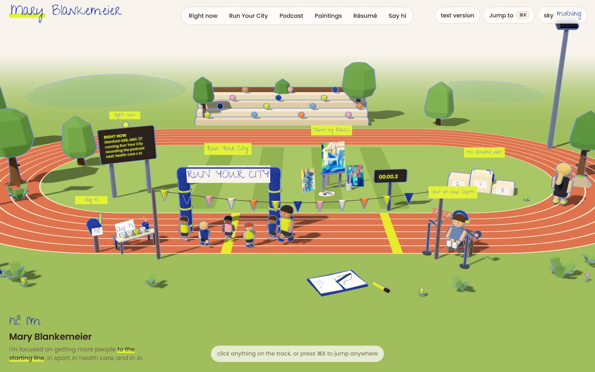

1 Why
2 Voice
3 Design
4 Build
5 Host
6 Go
Make your AI look & sound like you
AI@GSB Workshop 3
grab a seat, we start at 6:20
1 Why
2 Voice
3 Design
4 Build
5 Host
6 Go
Tonight you leave with a live site in your ~style~
20 minutes of me, 50 minutes of you
1
Why
Literally what is the point?
2
Voice
How do I pin down how I sound & teach it to AI?
3
Design
How do I figure out my taste & teach it to AI?
4
Build
How do I turn my style into a personal website?
5
Host
How do I put it online for the world to see?
1 Why
2 Voice
3 Design
4 Build
5 Host
6 Go
Left alone, AI builds the same site for everyone
BEFORE
Hi, I'm Mary. A dynamic leader with a proven track record of driving impact at scale.
voice + design
AFTER
Hi, I'm Mary. I build things that help kids run.
Oak Park kid. Bain, then health care. Now at the GSB, running a nonprofit on the side.
Say hi
1 Why
2 Voice
3 Design
4 Build
5 Host
6 Go
People trust work less when they think AI made it
16 to 20%
drop in trust once people learn AI was used
SCHILKE & REIMANN 2025
let's listen to the data people!
1 Why
2 Voice
3 Design
4 Build
5 Host
6 Go
Left alone, AI drifts to the average
Researchers played the telephone game with AI, 1,000 times
START
1,000 different starting pictures
EACH ROUND
AI draws it
AI describes it
AI redraws from the words
100 rounds, no human touching it
END
Almost every run became 1 of 12 stock scenes
Lighthouse & sea
City at night
Gothic cathedral
Palace interior
Luxury interior
Formal room
Rural village
Animals in a landscape
Home & food
Industrial vintage
Plain buildings
Sports & action
Their name for it: visual elevator music
HINTZE ET AL., PATTERNS, 2025
ok I promise... last study!
1 Why
2 Voice
3 Design
4 Build
5 Host
6 Go
A skill is a playbook that AI reads before it works
Write it once & AI uses it every time it fits
MY SHELF
undyslexify
plain words
winning-writing
tighter emails
humanizer
opened →
voice
yours tonight
design
yours tonight
humanizer / SKILL.md
1 WHEN TO USE IT
Anytime I edit writing so it sounds like a person
2 HOW TO DO IT
Spot the AI tells, like em dashes, "delve" & lists of three. Rewrite them plainly.
3 EXAMPLE
"I'm passionate about leveraging synergies"
→ "I like fixing broken things"
1 Why
2 Voice
3 Design
4 Build
5 Host
6 Go
Samples + tone + nevers = your voice
SAMPLES
How you write
An email you sent
A post you wrote
A text to a friend
Or ask Claude, “hey bestie, give me examples of how I write”
+
TONE, PICK ONE
How you communicate
Polished structured, concise
Warm direct, humble
Playful candid, fun
+
NEVERS
Ish that makes you cringe
passionate about
excited to share
proven track record
Test it
Ask Claude for a two-line intro in your voice & read it out loud. Give feedback, srsly not time to be shy
1 Why
2 Voice
3 Design
4 Build
5 Host
6 Go
Assets + vibe + nevers = your look
ASSETS
Your deets
Photos (e.g., headshot)
Details (e.g., resume or LinkedIn text)
+
VIBE
How you want
Example output
Colors
Fonts
Descriptors (e.g., warm, direct, bright)
+
NEVERS
The icks
stock photos
rainbow gradients
dots
unnecessary whitespace
Shortcut
Show Claude your 2 favorite sites & ask what they have in common. Incorporate that ish!
1 Why
2 Voice
3 Design
4 Build
5 Host
6 Go
Not to make it about me, but here's mine

mary-blankemeier.vercel.app
ASSETS
My headshot, paintings & resume
VIBE
Blue pen + a yellow-green highlighter pulled from my headshot. Poppins + handwriting.
NEVERS
No emojis, no tape on photos, no big-number stats
How to find your nevers: build once, see what makes you wince, write it down... do that ish again
P.S. Share feedback & I'll send you the code for my site... feel free to copy

1 Why
2 Voice
3 Design
4 Build
5 Host
6 Go
Hand Claude your story & goal, then ask for three options
WHAT YOU HAND OVER
Your LinkedIn saved as a PDF, or your résumé
Projects or research you're proud of
Your goal: what should a visitor do or feel?
Both skills switched on
A
"Love B. Headline's too stiff. Say it like my emails."
B, this one
C
Ask for three options → Pick one → Name what's off
1 Why
2 Voice
3 Design
4 Build
5 Host
6 Go
Host it live: drag one file to vercel.com/drop
Right now your site is a file on your laptop, like a letter in a drawer. Hosting mails it to an address anyone can visit
1
Get one file
Ask Claude: "Give me my site as one file called index.html." Download it.
2
Open the drop page
Go to vercel.com/drop & sign up free with GitHub or email
3
Drag it in
Drop index.html on the page, name it yourname-site & hit Deploy
4
Copy your link
Paste it into the tutorial, then text it to someone
1 Why
2 Voice
3 Design
4 Build
5 Host
6 Go
Six habits that save you an hour
1 New chat when it gets messy
Long chats get foggy, like a full whiteboard. Wipe it & start fresh. Your skills come with you.
2 Talk, don't type
Hit the mic & ramble about yourself. Claude cleans it up.
3 Let it interview you
"Ask me 5 questions before you write anything."
4 Show, don't describe
Paste a screenshot or a site you love instead of hunting for adjectives.
5 Fix the skill, not the page
Same fix twice? Say "add this to my skill" so it sticks for good.
6 Call your skill by name
If it forgets, say "use my voice skill."
1 Why
2 Voice
3 Design
4 Build
5 Host
6 Go
Your turn
tutorial link is in your email (if you RSVP'd)

Questions
PollEv

Feedback
2 minutes
STUCK? DEBUG IN THIS ORDER
1
Ask AI in the chat you're building in
2
Hit "Stuck?" in the tutorial
3
Post on PollEv (QR on the left)
4
Raise your hand & we'll come running!